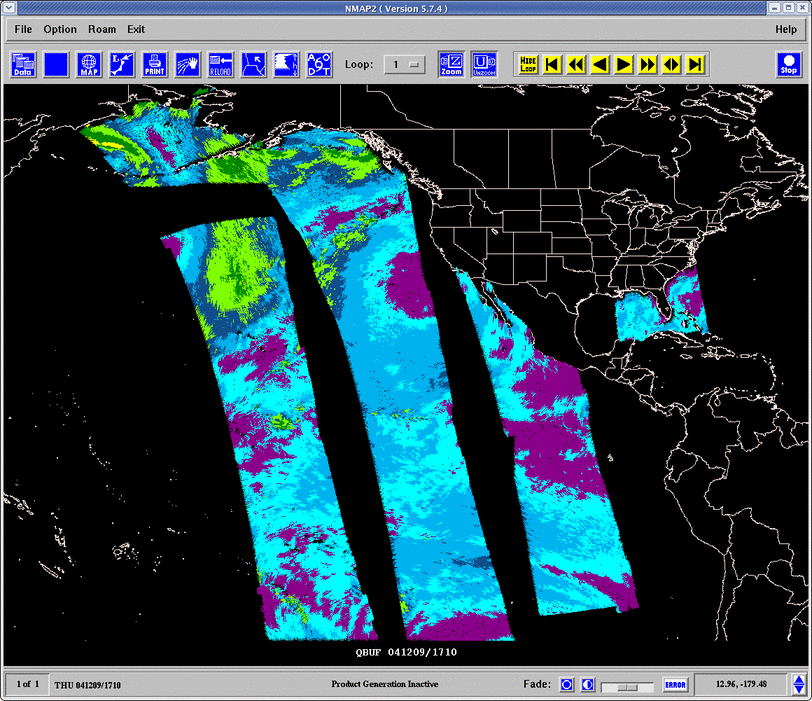
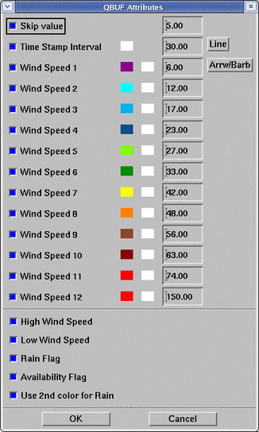
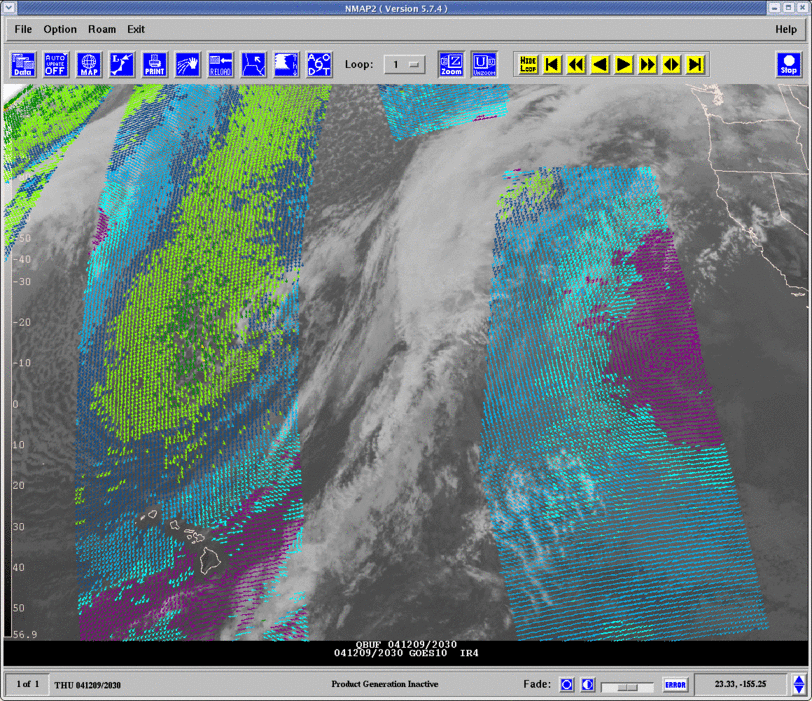

|
GEMPAK / N-AWIPS
QuikSCAT display
|
QuikSCAT data may be displayed using either NMAP2 or GPMAP. For sites receiving the
BUFR format products available via NOAAPORT, the QBUF
data type is used. A 6 hour time window is used to select passes for display.

A general tutorial on the background and use of QuikSCAT winds and scatterometry
can be found in the
VISIT QuikSCAT tutorial.
Configure the LDM to store QuikSCAT BUFR products
The following pattern/action lines, as provided in the GEMPAK pqact entries for
the LDM, are used to store the QuikSCAT BUFR data products data from the NOAAPORT IDD data stream.
HRS ^ISXX(..) KNES ([0-3][0-9])([0-2][0-9])([0-6][0-9])
FILE data/gempak/qsct/(\2:yyyy)(\2:mm)\2\3.bufr
Setting the GEMPAK file template
The QBUF data template is used in $GEMTBL/config/datatype.tbl
to define the naming convention which matches the above LDM pattern/action:
QBUF $GEMDATA/qsct YYYYMMDDHH.bufr CAT_MSC SCAT_NIL -1 2880 300
If you use the suggested LDM pattern action above, then you will not have to
make any modifications to the supplied template.
Displaying QuikSCAT winds in NMAP2
QuikSCAT winds are selected using the MISC data selection menu in NMAP2.
Select QBUF from the MISC menu to display the BUFR products from NOAAPORT.
|  |
Plot attributes may be configured by selecting
EDIT SOURCE in the data display menu.
- Wind data may be displayed as wind speed color coded wind barbs, directional arrows, or magnitude propotional vectors.
select the "Arrw/Barb" menu to configure the symbol type and size.
- The wind speed color and data range are set by defaults in $GEMTBL/config/miscset.tbl as shown. These
values may be changed in the GUI interactively. The Wind speed unit used for color ranges is in knots.
- The QuikSCAT BUFR data provides QC flags allowing the user to configure display of the wind data.
The QC flags may be used to plot data when the following flag conditions are present:
- High Wind Speed in excess of 30 m/s
- Low Wind Speed below 3 m/s
- Rain present
- Data Availability limited due to ice, land, or retrieval conditions
If the 2nd color for Rain box is selected and data is plotted when the Rain Flag is present, the 2nd column color is used. This option has no effect if the wind data are not being plotted when the Rain Flag is present.
|

Example showing color coded directional arrpws overlaid on GOES-10 IR image
Displaying QuikSCAT Winds in GPMAP
The QSCT parameter is used to select display of QuikSCAT winds in GPMAP.
Use the datatype QBUF and provide the wind speed ranges, colors and display flags as
defined in the QSCT parameter definition. A suitable definition for QSCT is:
QSCT = qbuf|last|6;12;18;24;30;36;42;48;54;60|30;6;26;24;21;23;5;17;8;14|31;31;31;31;31;31;31;31;31;31|.2;.4;1;5|0|1|1|Y|Y|Y|Y|Y
{kind=link}